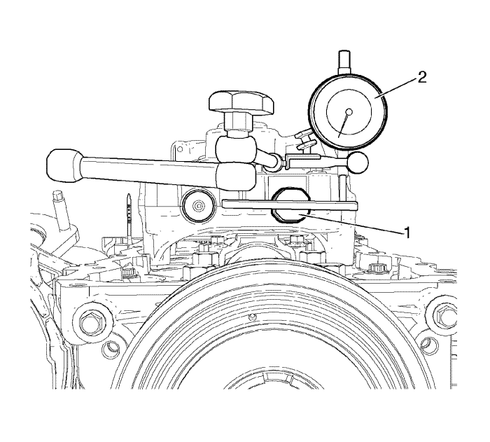

Limpieza e inspección del compensador
Herramientas especiales
EN-50431 Adaptador de medida de holgura de BSM
Si desea informarse sobre herramientas regionales equivalentes, consultar Herramientas especiales .
- Retire los restos del recubrimiento del engranaje del módulo del eje de compensación utilizando una pistola de aire y compruebe si el módulo del eje de compensación ha sufrido daños.

- Monte el adaptador de medición de juego de retroceso EN-50431 y el comparador tal y como se muestra en la imagen. Compruebe que el adaptador EN-50431 esté en horizontal.
- Mueva el módulo del eje de compensación con los dedos y compruebe las especificaciones de juego de retroceso (0,046-0,128 mm).
- Si el módulo del eje de compensación está fuera de las especificaciones, repita el procedimiento (1-3).
- Si el juego de retroceso del engranaje del módulo del eje de compensación no cumple con las especificaciones, sustituya el módulo del eje de compensación.
Especificaciones de juego de retroceso del engranaje del módulo del eje de compensación
| Valor del comparador
| Juego de retroceso del engranaje (real)
| Juego de retroceso del engranaje (especificación)
|
Mín.
| 0,9 (1,1-0,2) mm
| 0,056 mm
| 0,146 mm
|
Nominal
| 1,1 mm
| 0,085 mm
| 0,087 mm
|
Máx.
| 1,3 (1,1 + 0,2) mm
| 0,115 mm
| 0,128 mm
|
| © Copyright Chevrolet Europe. All rights reserved |